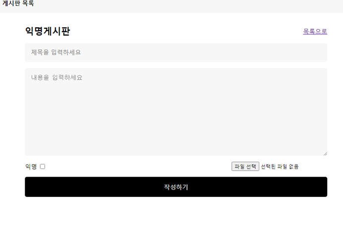
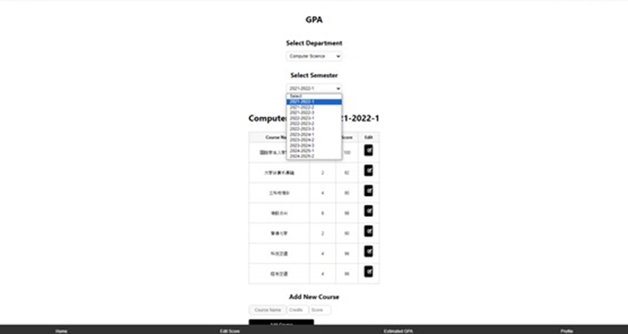
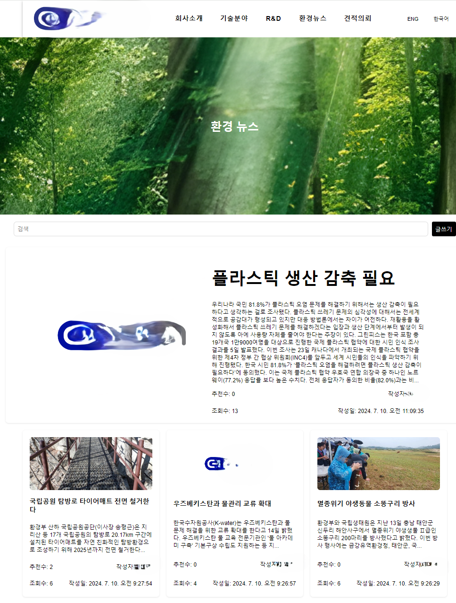

최준원 이모저모
1. 호기심이 많아서 취미가 많습니다.
골프, 여행, 산책, 독서, 사격, 노래, 축구, 헬스, 요리, 드라이브 등등
2. 열심히 사는 것을 좋아해서 매일 열심히 자기관리하며 삽니다.
3. 긍정적이고 다정하고 밝은 성격입니다.
ISFJ & ESFJ
4. 여의도에서 태어났고, 고등학교까지 서울에서 살다가 현재는 해외대학교 재학중입니다.
주요 프로젝트
1. 에브리타임 커뮤니티 앱 (팀 프로젝트)
북경 내 한인 커뮤니티가 없어 Wechat(중국의 카카오톡)에서 채팅방으로 운영을 했지만
채팅방의 최대 인원이 500명이라 여러 단톡방을 만들어 관리해야 하는 불편함이 매우 컸습니다.
그래서 한국의 Everytime 앱 처럼 커뮤니티 앱의 필요성을 느껴 개발 후 배포를 할 계획이였으나,
개발 도중 타 개발팀이 커뮤니티 앱을 개발 후 배포하여 실질적인 사용 유저는 확보하지 못했습니다.

2. 학점 조회 웹 사이트 개발 및 배포(개인 프로젝트)
대학교내 학점 조회시 국제처 방문 및 유학생 담당 교수님을 통해 알 수 있기 때문에 불편함이 매우 컸습니다.
그래서 웹과 앱으로 쉽게 자신의 현재 학점을 확인할 수 있고 앞으로의 과목의 점수를 미리 입력해
자신의 예상 학점을 미리 볼 수 있어 자신의 학업 계획을 세울 수 있도록 만들어 배포를 했습니다.

3. 회사 웹 페이지 디자인 및 개발 및 배포
Uizard라는 툴을 이용해 AI의 도움을 받으며 웹 디자인을 진행하였고,
React.js로 회사 웹페이지를 구현시켰습니다.
백엔드는 Firebase로 구축했습니다.
